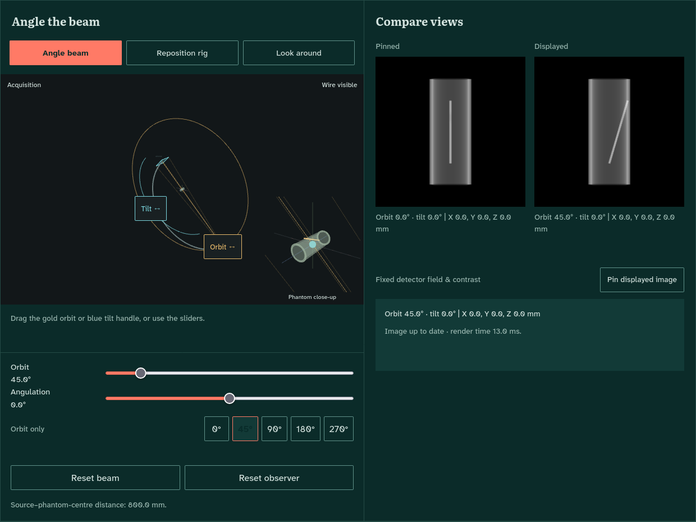

Parallax
A browser lab for understanding X-ray views and 3D geometry.
Built for junior orthopaedic trainees. Choose another view, compare the images and then inspect the 3D scene to see where the wire really lies.
Inside 3D Explore

Three ways to explore
- Guided lesson
- Choose an additional view and compare projections. Commit to a judgement before revealing the wire in 3D.
- 3D Explore
- Change the beam angle and position, pin an image for comparison and look around the scene independently.
- Femur
- Explore projections of a model femur. This mode is experimental.